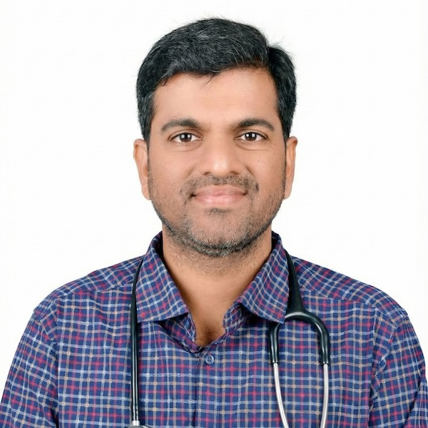

Consultant Rheumatologist with over 9 years of focused experience in diagnosing and managing rheumatic, autoimmune, and joint disorders. Has cared for more than 15,000 patients across his practice.
9+ సంవత్సరాల అనుభవం ఉన్న కన్సల్టెంట్ రుమటాలజిస్ట్. రుమటాయిడ్, ఆటోఇమ్యూన్, కీళ్ల సమస్యల నిర్ధారణ మరియు చికిత్సలో ప్రత్యేకత. 15,000+ పేషెంట్లకు చికిత్స అందించారు.
Trained in internal medicine (MD), with advanced UK certification (MRCP) and specialty examination in Rheumatology (SCE) — a programme recognised by the Royal Colleges of Physicians, UK.
జనరల్ మెడిసిన్లో MD, UK నుండి MRCP, మరియు రుమటాలజీలో SCE — UK రాయల్ కాలేజ్ ఆఫ్ ఫిజీషియన్స్ గుర్తించిన ప్రోగ్రామ్.
Rheumatoid arthritis, ankylosing spondylitis, lupus (SLE), psoriatic arthritis, gout, osteoporosis, vasculitis, and undiagnosed inflammatory joint pain.
రుమటాయిడ్ ఆర్థరైటిస్, ఆంకిలోజింగ్ స్పాండిలైటిస్, లూపస్ (SLE), సోరియాటిక్ ఆర్థరైటిస్, గౌట్, ఎముకల పూర్ణాన్నత తగ్గుదల, వాస్క్యులైటిస్.
Intra-articular and soft tissue corticosteroid injections, joint aspirations, and image-guided procedures for both diagnosis and treatment.
ఇంట్రా ఆర్టిక్యులర్ & సాఫ్ట్ టిష్యూ ఇంజెక్షన్లు, జాయింట్ ఆస్పిరేషన్, నిర్ధారణ & చికిత్స ప్రక్రియలు.
Patient-first, evidence-based and unhurried. Every consultation includes a clear explanation of what the condition is, what the tests mean, and what the plan looks like — in English or Telugu.
పేషెంట్ ముందుగా, శాస్త్రీయంగా, శ్రద్ధగా. ప్రతి కన్సల్టేషన్లో సమస్య ఏమిటి, టెస్ట్ల అర్థం ఏమిటి, తదుపరి ప్లాన్ ఏమిటి అన్నీ స్పష్టంగా వివరిస్తారు.